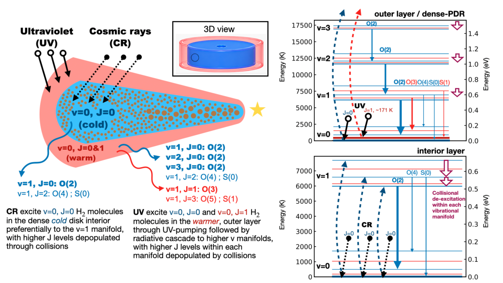
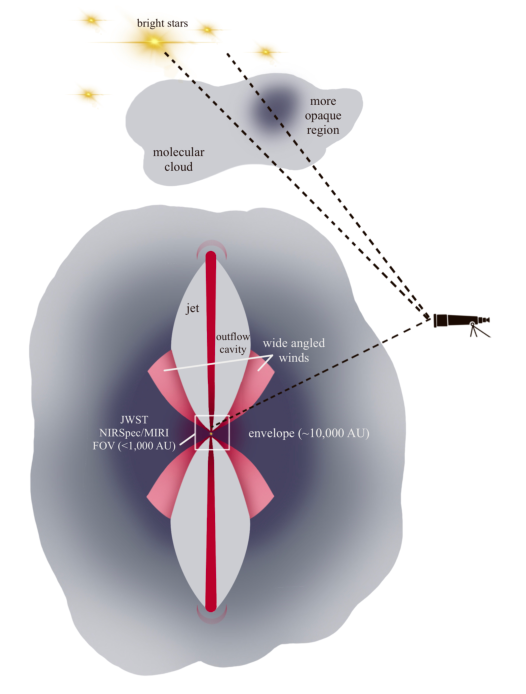
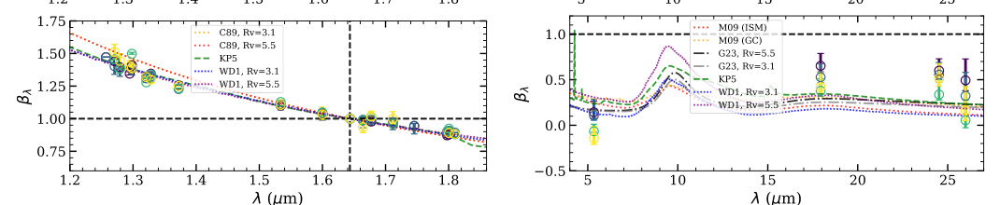
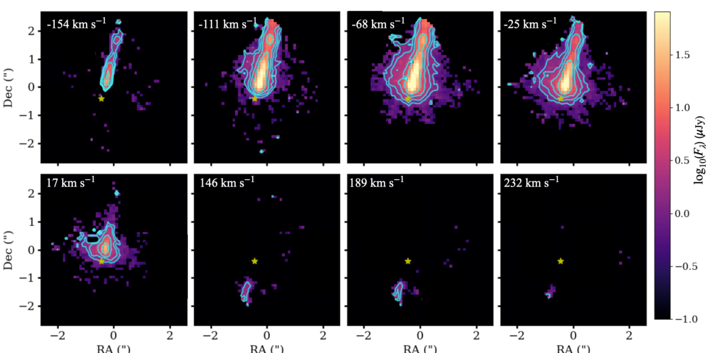

SCIENCE
From young stars to planet forming disks.
I combine observations and physical modeling to understand how gas, dust, and chemistry evolve during star and planet formation.
01 / COSMIC RAYS & MOLECULAR HYDROGEN
What is the source of ro-vibrational H₂ emission in disks?
Cosmic rays are highly energetic particles originating from energetic sources throughout our Galaxy and beyond. These particles travel enormous distances through space, interacting with magnetic fields along the way, before eventually transferring their energy through processes such as the ionization of gas. Cosmic rays have long been studied here on Earth, where the most energetic particles (GeV–TeV and beyond), traveling near the speed of light, collide with molecules in our atmosphere, such as N₂ and O₂, producing showers of secondary particles that can be detected on the ground.
However, our observations from Earth provide only part of the picture. The solar wind and its embedded magnetic field create an enormous region known as the heliosphere , which prevents many lower-energy cosmic rays from reaching us. It was not until Voyager 1 crossed the heliopause in 2012 that we could directly measure these particles in interstellar space, revealing a substantial increase in cosmic rays with energies of tens to hundreds of MeV compared with measurements near Earth. Although these particles are less energetic than those commonly detected in Earth's atmosphere, they are generally more abundant and particularly efficient at ionizing molecular gas.
Despite their importance, cosmic rays remain difficult to observe in planet-forming environments, where ionization plays a fundamental role in both chemistry and disk evolution. For example, the ionization of H₂ leads to the production of H₃⁺, which drives numerous chemical reactions contributing to the formation of more complex molecules. Ionization also determines how strongly the gas couples to magnetic fields, influencing the transport of angular momentum, disk evolution, and potentially the pathways through which planets form. However, theoretical studies suggest that the strong stellar winds and magnetic fields of young stars may suppress Galactic cosmic rays from reaching planet-forming disks, much like our own Sun, but potentially to an even greater extent. Observations of molecular ions have generally supported this interpretation, although the contribution of cosmic rays remains uncertain.
In this study, we use the exceptional sensitivity and spatial resolution of the NIRSpec integral field unit aboard the James Webb Space Telescope (JWST) to investigate an unusual H₂ spectrum in the nearly edge-on protoplanetary disk Oph 163131, where emission extends hundreds of astronomical units into the outer disk. The spectrum is particularly interesting because the molecular hydrogen appears vibrationally hot, but rotationally cold. Recent theoretical developments (Padovani et al. 2022, 2024) have shown how cosmic rays can excite H₂ through collisions with energetic secondary electrons, producing distinctive ro-vibrational emission. More recently, Bialy et al. (2026) reported the first direct detection of cosmic-ray-excited H₂ in an interstellar molecular cloud using JWST. We investigate whether similar processes, alongside ultraviolet excitation, could explain the unusual H₂ emission observed in Oph 163131 and potentially provide a new way to constrain cosmic-ray ionization in planet-forming disks.
Read the paper ↗

02 / DUST & EXTINCTION
Using protostellar jets to study the dust from which planets form.
One of the first things you learn in astronomy is the importance of dust. Even outside astronomy, most people have probably heard the phrase "we are all made of stardust." Although dust accounts for only a small fraction of the mass in the interstellar medium (typically around 1% compared to gas), it plays a fundamental role in some of the most important processes in the Universe. Dust grains provide surfaces for chemical reactions, absorb and scatter starlight, and emit thermal radiation that dominates much of what we observe in the infrared from star-forming regions. Perhaps most importantly, these tiny particles are the building blocks of planets, growing from submicron-sized grains into much larger bodies that may eventually become planets capable of supporting life.
Understanding how dust grows during planet formation requires us to constrain the sizes and compositions of these particles. One of the most common ways to do this is by measuring dust extinction , or how dust absorbs and scatters light as a function of wavelength. Different populations of dust grains attenuate light differently, allowing us to infer their physical properties from the resulting extinction curve . Traditionally, astronomers have measured these curves using bright background stars shining through interstellar dust clouds. However, applying this technique to the dense environments surrounding forming stars is much more difficult, where the large amounts of gas and dust can obscure background starlight.
In this study, we developed a new way to measure extinction in these deeply embedded environments by using a protostellar jet as our background light source. Young stars eject narrow, high-velocity jets of gas that can produce bright emission from ionized iron ([Fe II]). These jets are often surrounded by a protostellar envelope , the dense material that continues to feed the forming star and its disk during the earliest stages of star formation. By observing the jet through this surrounding material, we can use its emission to measure the extinction caused by dust in the foreground envelope. Using the exceptional sensitivity of JWST's NIRSpec and MIRI instruments, we measured [Fe II] emission lines across the near- and mid-infrared toward several locations along the jet of TMC1A. By modeling the intrinsic line ratios expected from the gas and comparing them with what we observe, we can determine how much the emission has been attenuated at different wavelengths.
Our results suggest that the dust in the protostellar envelope may differ from that typically found along sightlines through diffuse and dense interstellar clouds. In particular, the inferred mid-infrared extinction is consistent with an increased population of larger dust grains, potentially indicating that dust growth has already occurred in the material surrounding the young star. However, this interpretation depends on whether the near- and mid-infrared iron emission traces gas with similar physical conditions. If these lines originate from regions with different temperatures and densities, the extinction could instead be consistent with existing interstellar dust models. Either way, this technique provides a new opportunity to study how dust evolves in the earliest stages of star and planet formation.
Read the paper ↗



03 / PROTOSTELLAR JETS & OUTFLOWS
Understanding how young stars launch asymmetric jets.
This was the first study I led using JWST observations, where we investigated the jets and outflows of the young protostar TMC1A and discovered a previously undetected, asymmetric bipolar jet. Although jets and outflows are commonly observed around young stars, exactly how they are launched remains an important question in star formation. One of the leading explanations involves magnetic fields through a process known as magneto-centrifugal launching , where gas coupled to magnetic fields anchored in a rotating disk can be accelerated outward along the field lines. These outflows remove angular momentum from the star-disk system, allowing material to continue accreting onto the young star.
As this material travels away from the star, it can interact with surrounding gas and produce shocks that heat and excite atoms and molecules, generating emission in lines such as molecular hydrogen (H₂) and ionized iron ([Fe II]). By observing these lines, we can trace the structure, velocity, and physical conditions of the outflow. Using the NIRSpec integral field unit aboard JWST, we resolved both the narrow atomic jet and the broader molecular outflow of TMC1A, including the previously undetected redshifted side of the bipolar jet.
Interestingly, the redshifted jet is roughly 10–30 times fainter than its blueshifted counterpart, and our measurements suggest that this difference cannot be explained by dust extinction alone. Such asymmetries are particularly important because they may provide clues about the physical conditions and magnetic fields responsible for launching jets. Models of protostellar outflows must ultimately be able to explain why two sides of the same system can produce such different emission and velocities.
This discovery led to my first successful JWST proposal as Principal Investigator during my PhD, awarded in Cycle 4 ( JWST Program 8872 ). Through this program, we aim to investigate the much fainter redshifted outflow of TMC1A in greater detail, with the goal of understanding the origin of its asymmetry and what it can tell us about the mechanisms that launch protostellar jets.
Read the paper ↗

CURRENT RESEARCH / MOLECULAR CHEMISTRY
Where do the building blocks of planetary chemistry come from?
As a postdoctoral researcher at the University of Bern, I now work on the reduction and analysis of JWST observations to investigate the origins of complex organic molecules in star- and planet-forming environments. One of the central questions we are trying to answer is what astronomers often refer to as the chemical inheritance problem. Do the complex molecules we observe in forming planetary systems originate in the cold molecular clouds from which stars are born, surviving the subsequent stages of star and planet formation? Or are these molecules largely formed anew as the young star, its surrounding disk, and eventually planets begin to take shape?
Understanding when and where these molecules form, and whether they survive the journey from molecular clouds into planet-forming disks, can help us piece together the chemical history of planetary systems, including our own Solar System. Using JWST, we can study the molecular gas and ices in deeply embedded young stellar systems, providing new opportunities to trace how chemical complexity develops throughout the star formation process.
05 / VARIABILITY & ACCRETION
What can changing young stars tell us about their disks?
Through my long-standing collaboration with Dr. Michael Sitko and colleagues, I study how young stars and their circumstellar disks change over time. Our observations of T Tauri and Herbig Ae/Be systems include infrared spectroscopy with SpeX on NASA's Infrared Telescope Facility (IRTF), allowing us to investigate changes in accretion and the inner disk.
Hydrogen emission lines such as Paβ, Brγ, and Brα trace gas associated with accretion, while changes in infrared emission and extinction can reveal evolving dust structures that sometimes obscure the star. By following these systems over time, we can connect variability to the physical processes shaping young stars and their planet-forming disks.
This work includes studies of occultation events in HD 163296, wavelength-dependent extinction in 'dipper' stars, and gas dynamics in variable young stellar systems. See my publications for related papers.